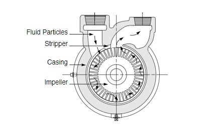

Kinetic pumps are dynamic devices that impart the energy of motion (kinetic energy) to a liquid by use of a rotating impeller, propeller, or similar device.
Turbine pumps obtain their name from the many vanes machined into the periphery of the rotating impeller.
The impeller, which has very tight axial clearance and uses pump channel rings, displays minimal recirculation losses. The channel rings provide a circular channel around the blades of the impeller from the inlet to the outlet.
Liquid entering the channel from the inlet is picked up immediately by the vanes on both sides of the impeller and pumped through the channel by the shearing action. The process is repeated over and over with each pass imparting more energy until the liquid is discharged.
As multi-stage pumps with up to three impellers, turbine pumps can achieve heads of up to 1,200 meters.
Selecting an appropriate pump type is the first step, after which, the pump must be appropriately sized for the particular application. This requires significant understanding of the wider pumping system, particularly to establish the required pump duty.
Notable inputs:
Several industry tools exist to aid in pump sizing using the above inputs. One such useful tool by Xylect is linked here. Additionally, the following spreadsheet may be particularly helpful in establishing the aforementioned inputs. (This file can also be found in the supporting documents folder.)